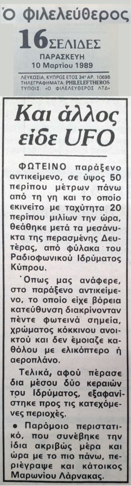
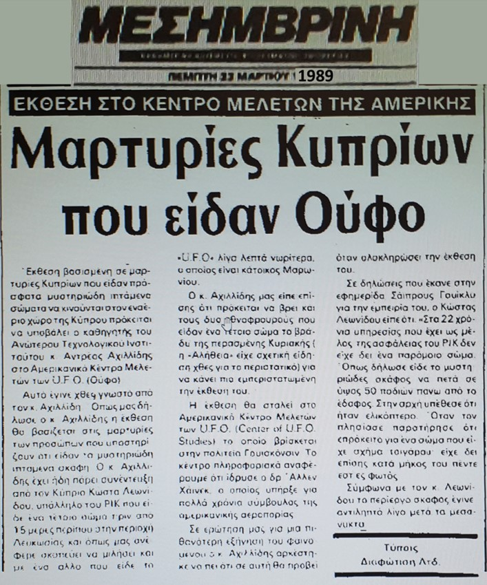

Description Περιγραφή
Around midnight on 7 March 1989, the security guard of the Cyprus Broadcasting Corporation (CyBC / ΡΙΚ), a man identified by his initials as K.L., was on duty when he observed a bright object that resembled a cigarette approaching the premises at a height of about 50 metres and at very low speed.
The object was approximately seven metres long and carried five intense lights emitting a light-red colour. K.L. hid behind his sentry box and continued watching as the object "floated" quietly through the air in a northerly direction. The observation lasted about one minute, after which the object disappeared toward the Turkish quarter of Nicosia.
The object was also noticed by other persons in the area. The account was published in the Φιλελεύθερος and Μεσημβρινή newspapers shortly after the event.
Γύρω στα μεσάνυχτα της 7ης Μαρτίου 1989, ο φύλακας του Ραδιοφωνικού Ιδρύματος Κύπρου (ΡΙΚ), άνδρας που ταυτοποιείται με τα αρχικά Κ.Λ., ήταν σε υπηρεσία όταν παρατήρησε ένα φωτεινό αντικείμενο που έμοιαζε με τσιγάρο, να πλησιάζει το Ίδρυμα σε ύψος περίπου 50 μέτρων και με πολύ μικρή ταχύτητα.
Το αντικείμενο είχε μήκος περίπου επτά μέτρα και έφερε πέντε έντονα φώτα που εξέπεμπαν φως ανοικτού κόκκινου χρώματος. Ο Κ.Λ. κρύφτηκε πίσω από το φυλάκιό του και συνέχισε να παρατηρεί το αντικείμενο, το οποίο "έπλεε" ήσυχα στον αέρα με διεύθυνση προς Βορρά. Η παρατήρηση διάρκεσε ένα μόνο λεπτό, και στη συνέχεια το αντικείμενο εξαφανίστηκε προς την Τουρκική συνοικία της Λευκωσίας.
Το αντικείμενο έγινε αντιληπτό και από άλλα πρόσωπα στην περιοχή. Η αναφορά δημοσιεύθηκε στις εφημερίδες Φιλελεύθερος και Μεσημβρινή λίγο μετά το περιστατικό.
Source Material Πηγαίο Υλικό


Primary sources: Φιλελεύθερος (10 March 1989) and Μεσημβρινή (March 1989). Κύριες πηγές: Φιλελεύθερος (10 Μαρτίου 1989) και Μεσημβρινή (Μάρτιος 1989).
Notes Σημειώσεις
This case remains under investigation. Notable for the proximity of the object to a public broadcasting facility and the corroboration of other witnesses in the area. If you witnessed this event or hold additional documentation, please contact us via the Report a UAP form. Η υπόθεση παραμένει υπό διερεύνηση. Αξιοσημείωτη για την εγγύτητα του αντικειμένου σε δημόσια ραδιοτηλεοπτική εγκατάσταση και την επιβεβαίωση από άλλους μάρτυρες στην περιοχή. Εάν υπήρξατε μάρτυρας του γεγονότος ή διαθέτετε πρόσθετη τεκμηρίωση, παρακαλούμε επικοινωνήστε μαζί μας μέσω της φόρμας Αναφέρετε UAP.